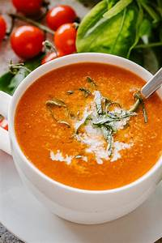
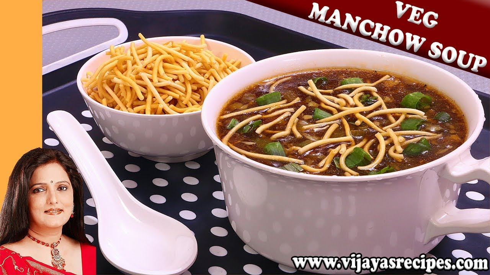
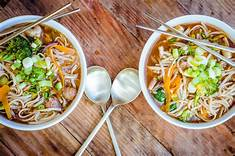

|  |
Tomato Soup
Price 60|| Category:Soups smooth in texture include chunks (or small pieces) of tomato, |
 |
Vegetable Manchow soup
Price 90|| Category: Soups Vegetable Manchow Soup is a spicy, hot and sour Indo-Chinese |
 |
Vegetable Manchow soup
Price 70|| Category: Soups Vegetable Noodle Soup is full of healthy veggies,protein packed |